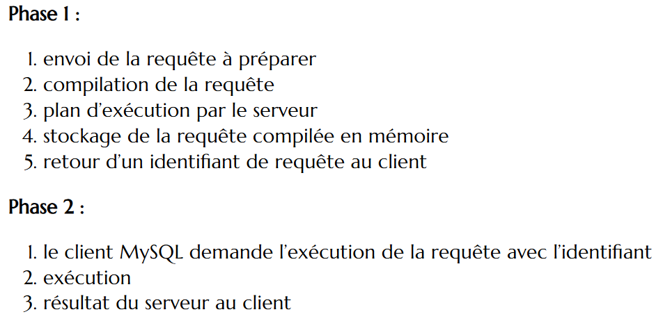

En suivant l’architecture MVC, nous avons structuré le projet de manière à séparer clairement la gestion des données : modèle, la logique métier : contrôleur et la présentation : vue.
Cette approche a permis une meilleure organisation du code, facilitant ainsi la maintenance et l’évolution de l’application.
Par exemple, les modifications dans la présentation (HTML/CSS) pouvaient être réalisées sans affecter la logique métier ou les interactions avec la base de données.
Back-end

Comme nous l'avons vu dans la première partie du projet PAP, nous avons abordé la conception et la mise en œuvre une base de données robuste. Cette conception nous a grandement facilité la récupération des données via des requêtes SQL.
L’intégration de cette base avec le backend a permis d’établir un flux continu et sécurisé entre l’application et les données. Cela a aussi contribué à optimiser les performances lors de traitements complexes.
La sécurité des données étant une priorité, nous avons écrit les requêtes SQL en utilisant des techniques pour prévenir les failles, notamment les injections SQL.
Nous avons ainsi utilisé des requêtes dites "préparées", pour garanti que les entrées utilisateur soit correctement traitées avant d’être envoyées à la base de données.
Cette approche a renforcé la fiabilité et la sécurité de l’application, en protégeant les données sensibles contre des attaques courantes.

Enfin, nous avons mis en place la gestion des cookies et des sessions pour assurer une expérience utilisateur personnalisée et sécurisée, mais aussi pour la gestion des paniers.
Les cookies ont été utilisés pour stocker des informations temporaires côté client, telles que les préférences ou les données non sensibles.
En parallèle, les sessions ont servi à gérer des données sensibles comme les identifiants utilisateurs, garantissant leur stockage sécurisé côté serveur.
A propos du projet
Versionning : GitLab
Equipe : 3 personnes
Communication : GoogleDocs, Discord
Outils de développement : phpMyAdmin, php, mySQL
Durée du projet : du 7 octobre au 23 novembre 2024, 1,5 mois